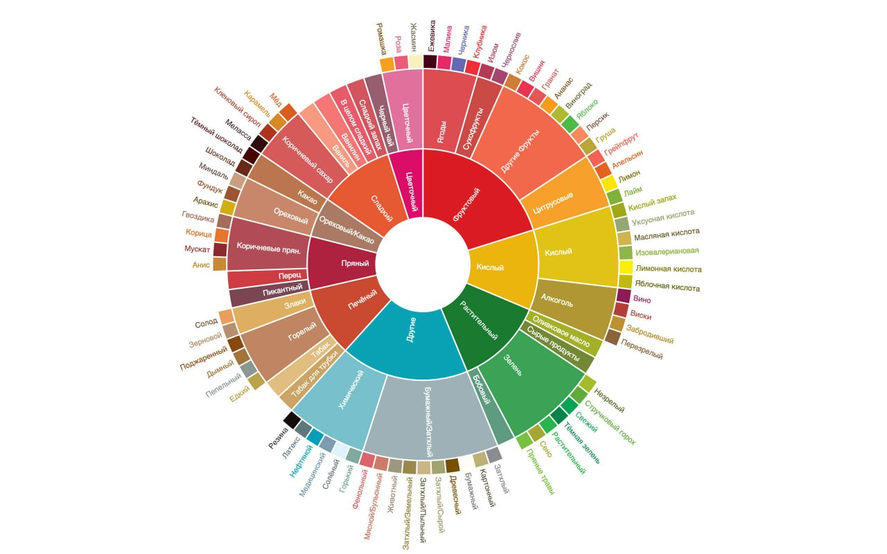

Что это такое
Вкусовой круг — это инструмент, который помогает бариста:
- Понимать вкус кофе — различать ноты (кислотность, сладость, горечь, фрукты, орехи, шоколад и т.д.)
- Подбирать кофе под запрос гостя — например: «не кислый», «мягкий», «шоколадный», «яркий»
- Контролировать качество напитков — понимать, когда вкус «не тот» из-за помола, экстракции или молока

Вкусовой круг бариста
Как пользоваться: сравните вкус готового напитка с секторами круга. Так вы поймёте, каких нот не хватает или, наоборот, слишком много. Это поможет скорректировать помол, экстракцию или количество молока.
📖 Больше информации о вкусовом круге